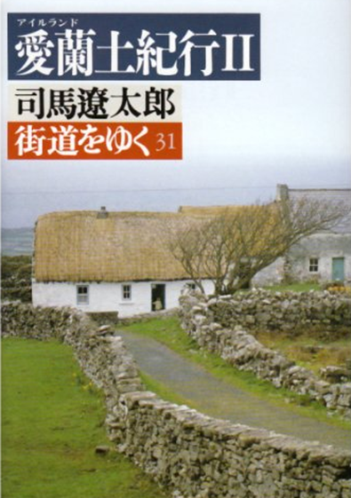

目录
Ø 豆皮寿司
Ø 两人就餐的咖啡厅
Ø LOVE雕塑
Ø 轻井泽町
Ø 怪医杜立德
Ø 帕丁顿熊
Ø 矮妖
Ø 司马辽太郎
出典：
豆皮寿司（日语：稲荷寿司）是寿司的一种，在日本被称为“稻荷寿司”。外表用油炸豆皮包裹，内为醋饭。豆皮寿司是寿司中较为廉价常见的品项，是日本常见的家庭料理。
_Kariya.files/image002.jpg)
Figure 1. 豆皮寿司
位于新宿三丁目的咖啡厅， 创立于1978年，以其看板猫而闻名。
Figure 2. Cafe Arles咖啡厅（右下角是看板猫）
² 新宿i-Land Tower
新宿i-Land Tower（新宿アイランドタワー）是位于日本东京都新宿区西新宿六丁目新宿新都心的一座摩天大楼。这座建筑竣工于1995年，是住宅・都市整备公团（现都市再生机构）实施的西新宿六丁目东地区再开发事业的一部分。整座大楼楼高44层，设有办公室，商店，住宅和一所专门学校。同时，以新宿i-Land Tower为中心形成了一个公寓大厦区域，这一区域被称为“新宿i-Land”。大厦顶部的圆形部分是直升机停机坪。都市再生机构的部分部门在此办公。
Figure 3. 新宿i-Land Tower
² LOVE雕塑
LOVE雕塑是一座公共艺术品，位于新宿i-LAND入口处。由美国艺术家罗伯特·印第安纳（Robert Indiana）创作，是情侣们的著名约会场所，甚至还产生了一个都市传说：如果你可以在雕塑V和E之间通过，同时身体不碰到它，那么你的恋情将会一帆风顺。
Figure 4. 位于新宿i-Land入口的LOVE雕塑
轻井泽町在日本长野县东部。属北佐久郡。以避暑、山庄而闻名。有大量的观光客涌入。2005年，约有780万人来访该地。1964年的东京奥运会和1998年的长野冬季奥运会都在这里有项目进行。是世界唯一的一个冬季、夏季奥林匹克运动会均设有比赛场地的町。
_Kariya.files/image006.jpg)
Figure 5. 轻井泽町街头一景
杜立德医生或译为“赖医生”，是一个出生自英国而后来在美国工作的小说家休·洛夫廷所著的儿童文学作品系列，曾获美国纽伯瑞儿童文学奖金奖。
故事发生在维多利亚时代的英国。约翰・杜立德（John Dolittle）是一位医学博士。他是世界上唯一一个可以与动物说话的人。他从一只叫做波利尼西亚（Polynesia）的鹦鹉哪里学会了各种动物的语言，后来在鱼食小贩的建议下转行作兽医，因为懂得动物语言，帮助了很多动物，并在世界上的动物中拥有了很大的声誉。
后来应非洲动物的邀请，历尽艰险前往非洲，治疗一种已在猴子之间传播传染病，并最终治愈了在动物中传播的瘟疫。然后，杜立德医生带着非洲动物赠送的双头动物返回英国，通过在英国各地展览，获取了不少钱财，还清了此前因为帮助动物所欠下的大量欠款。他后来成为了一个自然学家（博物学家），利用自己能和动物说话交流的能力，来更好的理解和发现自然和它的历史。后来，他又多次远航各地，还去月球旅行过。
Figure 6.《怪医杜立德》封面
帕丁顿熊是英国儿童文学中的一个虚构角色。他第一次出现是在1958年，随后有14本米高·邦所写的书是以他为主角，由佩姬·佛特南绘制的帕丁顿熊图像获得专售权。帕丁顿熊的灵感来源据说是邦德及妻子在圣诞节期间在一家店内所看到的泰迪熊，因为那只泰迪熊是货架上最后一只小熊，他们觉得它会感到孤独因此把它买了回家。
帕丁顿熊是一只拟人化的熊，说英语，总是戴着一顶旧帽子，无论到哪里都带着一个装有他私人物品的旧皮箱（后来打开才知道里面有一个秘密隔间，帕丁顿熊在内放置一些他认为最重要的东西，例如：他的护照）。在初创及较早的版本中，他穿着一件厚呢风衣，及一双威灵顿长统靴。他总是有礼貌地以“先生”、“女士”或“小姐”来称呼他人，很少直接用名字。他也总是心怀善意（虽然他会瞪他不同意的人），喜欢柑橘酱三明治及可可，虽然大家知道他“非常努力想把每件事情做对”，但是他却不断惹出许多麻烦。
Figure 7. 《帕丁顿熊》封面
Leprechaun，指矮精灵或矮妖，是爱尔兰非常有名的传说生物。
矮精灵的共通特征就是红色胡子和整齐的绿衣绿帽。矮精灵非常喜欢收集黄金，并把黄金埋藏在彩虹的尽头。他们每天数自己得来的金子。
在童话故事中，矮精灵还是鞋匠的帮手。在庆祝圣帕特里克节的地区，有制作捕捉矮精灵陷阱的习俗，通常认为酢浆草和穿绿色衣物可以吸引矮精灵。如果被人抓到，矮妖会用自己的魔法实现人的三个愿望来换取自由。
"Leprechaun Crossing"指的是爱尔兰的一处著名景点，一个印有矮精灵的标志牌，在司马辽太郎的爱尔兰游记中有所描述。
Figure 8. Leprechaun Crossing
司马辽太郎（1923年8月7日－1996年2月12日），是日本的大阪出身的小说家。本名福田定一。专攻历史小说。笔名司马辽太郎是文学方面“远不及司马迁”的意思。获认为是日本大众文学的巨匠，也是日本国民中最受欢迎的作家，获认为是中流砥柱般的人物。
司马辽太郎最重要的文学成就在描写江户末期的历史小说。透过他笔下描写出来的人物如坂本龙马等，如今已成为时代剧里反复传诵的典型。司马笔下的人物在那个幕藩制度崩溃的时代里，一面承传着根深柢固的传统，一面对崭新的未来抱持着光明的想望。评者认为这样的性格呼应着日本人一个世纪以来面对现代化与传统时的心情，也是司马的小说历久不衰的原因。

Figure 9. 司马辽太郎和他的爱尔兰游记